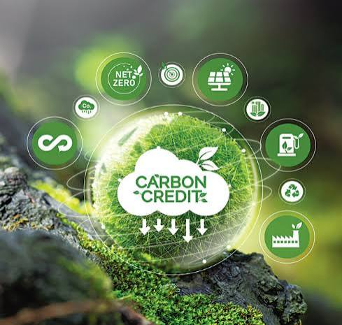

Environmental consulting, industrial training, academic research support and AI-powered social impact across Zimbabwe, Botswana and South Africa.
Explore Our ServicesFour practice areas, one standard of technical rigour.
Environmental Impact Assessments, environmental management plans, auditing, waste management and carbon advisory.
Occupational safety and health, industrial hygiene, fire fighting, chemical handling and farmer training programmes.
Research data analysis, proposal development, thesis writing coaching and guidance on the responsible use of AI in academic work.
An AI-powered study assistant supporting Zimbabwean teachers from ECD through to Form 6.
Assessments, monitoring and advisory work across Southern Africa.



Our environmental professionals bring specialist training and field experience, so assessments and reports are technically sound and aligned with environmental legislation in each country we work in.
Client support across Zimbabwe, Botswana and South Africa, with local contact numbers in each market.
Baseline surveys, monitoring data and measurable indicators underpin every recommendation we make.
Send us a message on WhatsApp and we will respond during business hours.
+263 77 779 1851
Chat on WhatsApp